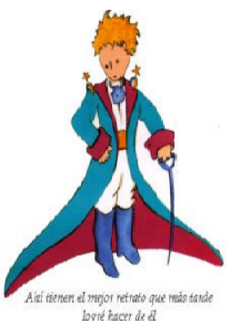

El principito
A. De Saint - Exupéry
Pido perdón a los niños por haber dedicado este libro a una persona mayor. Tengo una seria excusa: esta persona mayor es el mejor amigo que tengo en el mundo. Tengo otra excusa: esta persona mayor es capaz de entenderlo todo, hasta los libros para niños. Tengo una tercera excusa: esta persona mayor vive en Francia, donde pasa hambre y frío. Verdaderamente necesita consuelo. Si todas esas excusas no bastasen, bien puedo dedicar este libro al niño que una vez fue esta persona mayor. Todos los mayores han sido primero niños. (Pero pocos lo recuerdan). Corrijo, pues, mi dedicatoria
A LEON WERTH CUANDO ERA NIÑO
I
Cuando yo tenía seis años vi en un libro sobre la selva virgen que se titulaba "Historias vividas",
una magnífica lámina. Representaba una serpiente boa que se tragaba a una fiera.
En el libro se afirmaba: "La serpiente boa se traga su presa entera, sin masticarla. Luego ya no
puede moverse y duerme durante los seis meses que dura su digestión".
Reflexioné mucho en ese momento sobre las aventuras de la jungla y a mi vez logré trazar con
un lápiz de colores mi primer dibujo. Mi dibujo número 1 era de esta manera:
Enseñé mi obra de arte a las personas mayores y les pregunté si mi dibujo les daba miedo.
—¿por qué habría de asustar un sombrero?— me respondieron.
Mi dibujo no representaba un sombrero. Representaba una serpiente boa que digiere un elefante.
Dibujé entonces el interior de la serpiente boa a fin de que las personas mayores pudieran comprender.
Siempre estas personas tienen necesidad de explicaciones. Mi dibujo número 2 era así
Las personas mayores me aconsejaron abandonar el dibujo de serpientes boas, ya fueran abiertas o cerradas, y poner más interés en la geografía, la historia, el cálculo y la gramática. De esta manera a la edad de seis años abandoné una magnífica carrera de pintor. Había quedado desilusionado por el fracaso de mis dibujos número 1 y número 2. Las personas mayores nunca pueden comprender algo por sí solas y es muy aburrido para los niños tener que darles una y otra vez explicaciones.
Tuve, pues, que elegir otro oficio y aprendía pilotear aviones. He volado un poco por todo el mundo y la geografía, en efecto, me ha servido de mucho; al primer vistazo podía distinguir perfectamente la China de Arizona. Esto es muy útil, sobre todo si se pierde uno durante la noche.
A lo largo de mi vida he tenido multitud de contactos con multitud de gente seria. Viví mucho con personas mayores y las he conocido muy de cerca; pero esto no ha mejorado demasiado mi opinión sobre ellas.
Cuando me he encontrado con alguien que me parecía un poco lúcido, lo he sometido a la experiencia de mi dibujo número 1 que he conservado siempre. Quería saber si verdaderamente era un ser comprensivo. E invariablemente me contestaban siempre: "Es un sombrero". Me abstenía de hablarles de la serpiente boa, de la selva virgen y de las estrellas. Poniéndome a su altura, les hablaba del bridge, del golf, de política y de corbatas. Y mi interlocutor se quedaba muy contento de conocer a un hombre tan razonable.
II
Viví así, solo, nadie con quien poder hablar verdaderamente, hasta cuando hace seis años tuve una avería en el desierto de Sahara. Algo se había estropeado en el motor. Como no llevaba conmigo ni mecánico ni pasajero alguno, me dispuse a realizar, yo solo, una reparación difícil. Era para mí una cuestión de vida o muerte, pues apenas tenía agua de beber para ocho días. La primera noche me dormí sobre la arena, a unas mil millas de distancia del lugar habitado más próximo. Estaba más aislado que un náufrago en una balsa en medio del océano. Imagínense, pues, mi sorpresa cuando al amanecer me despertó una extraña vocecita que decía:
— ¡Por favor... píntame un cordero!
—¿Eh?
—¡Píntame un cordero!
Me puse en pie de un salto como herido por el rayo. Me froté los ojos. Miré a mi alrededor. Vi a un extraordinario muchachito que me miraba gravemente. Ahí tienen el mejor retrato que más tarde logré hacer de él, aunque mi dibujo, ciertamente es menos encantador que el modelo. Pero no es mía la culpa. Las personas mayores me desanimaron de mi carrera de pintor a la edad de seis años y no había aprendido a dibujar otra cosa que boas cerradas y boas abiertas.
Miré, pues, aquella aparición con los ojos redondos de admiración. No hay que olvidar que me
encontraba a unas mil millas de distancia del lugar habitado más próximo. Y ahora bien, el muchachito no
me parecía ni perdido, ni muerto de cansancio, de hambre, de sed o de miedo. No tenía en absoluto la
apariencia de un niño perdido en el desierto, a mil millas de distancia del lugar habitado más próximo.
Cuando logré, por fin, articular palabra, le dije:
— Pero… ¿qué haces tú por aquí?
Y él respondió entonces, suavemente, como algo muy importante:
—¡Por favor… píntame un cordero!
Cuando el misterio es demasiado impresionante, es imposible desobedecer. Por absurdo que
aquello me pareciera, a mil millas de distancia de todo lugar habitado y en peligro de muerte, saqué de mi
bolsillo una hoja de papel y una pluma fuente. Recordé que yo había estudiado especialmente geografía,
historia, cálculo y gramática y le dije al muchachito (ya un poco malhumorado), que no sabía dibujar.
—¡No importa —me respondió—, píntame un cordero!
Como nunca había dibujado un cordero, rehice para él uno de los dos únicos dibujos que yo era
capaz de realizar: el de la serpiente boa cerrada. Y quedé estupefacto cuando oí decir al hombrecito:
— ¡No, no! Yo no quiero un elefante en una serpiente. La serpiente es muy peligrosa y el elefante
ocupa mucho sitio. En mi tierra es todo muy pequeño. Necesito un cordero. Píntame un cordero.
Dibujé un cordero. Lo miró atentamente y dijo:
—¡No! Este está ya muy enfermo. Haz otro.
Volví a dibujar.
Mi amigo sonrió dulcemente, con indulgencia.
—¿Ves? Esto no es un cordero, es un carnero. Tiene Cuernos…
Rehice nuevamente mi dibujo: fue rechazado igual que los anteriores.
—Este es demasiado viejo. Quiero un cordero que viva mucho tiempo.
Falto ya de paciencia y deseoso de comenzar a desmontar el motor, garrapateé rápidamente este
dibujo, se lo enseñé, y le agregué:
—Esta es la caja. El cordero que quieres está adentro. Con gran sorpresa mía el rostro de mi
joven juez se iluminó:
—¡Así es como yo lo quería! ¿Crees que sea necesario mucha hierba para este cordero?
—¿Por qué?
—Porque en mi tierra es todo tan pequeño…
Se inclinó hacia el dibujo y exclamó:
—¡Bueno, no tan pequeño…! Está dormido…
Y así fue como conocí al principito.


Elaborado por : Alejandro Cruz
En la clase de Artek.